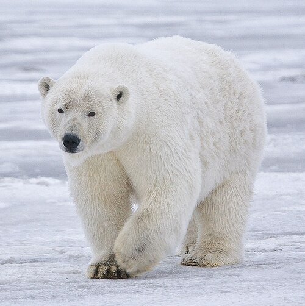

L'orso polare è un grande mammifero appartenente alla famiglia degli Ursidi.
È caratterizzato da una folta pelliccia bianca, un corpo robusto e zampe grandi e potenti,
dotate di artigli che gli permettono di muoversi facilmente sul ghiaccio.
Sotto la pelle possiede uno spesso strato di grasso che lo protegge dal freddo.
La sua pelle, in realtà, è nera e la pelliccia è composta da peli traslucidi.
È un animale solitario, con un olfatto molto sviluppato e un'ottima capacità di nuotare.
Un maschio adulto può raggiungere i 3 metri di lunghezza e pesare oltre 600 kg, mentre le femmine
sono generalmente più piccole. In natura vive mediamente dai 20 ai 25 anni, anche se alcuni
esemplari possono raggiungere i 30 anni.